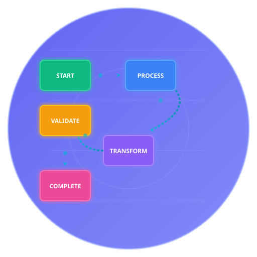

Process Flow Connectors

DocOps Connectors
Visualize process flows and sequential workflows with connected nodes
- What are DocOps Connectors?
- Basic CI/CD Pipeline
- Software Development Lifecycle
- Test Documentation Workflow
- Data Processing Pipeline
- Component Structure
- Design Best Practices
- Common Use Cases
- Advanced Examples
- Integration Tips
What are DocOps Connectors?
DocOps Connectors create beautiful, sequential flow visualizations that show how different stages, processes, or components connect together. Perfect for documenting workflows, CI/CD pipelines, data flows, and process chains.
Key Features
- Sequential Visualization - Clearly shows step-by-step progression through connected nodes
- Color-Coded Stages - Each step can have its own distinct color for visual clarity
- Rich Descriptions - Add context to each node with detailed descriptions
- Flexible Layout - Automatic spacing and arrangement of connected elements
- Gradient Support - Beautiful color gradients for modern, professional appearance
- Responsive Design - Scales elegantly from small embeds to full-width displays
🎯 Perfect For
CI/CD pipelines, development workflows, data processing chains, deployment stages, and any sequential process that needs clear visual communication.
Basic CI/CD Pipeline
A common use case—documenting your continuous integration and deployment pipeline:
Software Development Lifecycle
Illustrate traditional SDLC phases with distinct color coding:
Test Documentation Workflow
Show how automated tests generate documentation:
Data Processing Pipeline
Visualize ETL (Extract, Transform, Load) processes:
Component Structure
Each connector node consists of:
| Property | Type | Required | Description |
|---|---|---|---|
| text | String | Yes | The label displayed in the node |
| baseColor | String | No | Hex color code (default: #E14D2A) |
| description | String | No | Contextual information about this step |
JSON Structure
{
"connectors": [
{
"text": "Step Name",
"baseColor": "#6366f1",
"description": "What happens in this step"
},
{
"text": "Next Step",
"baseColor": "#8b5cf6",
"description": "Following action in the process"
},
{
"text": "Final Step",
"baseColor": "#a78bfa",
"description": "Completion of the workflow"
}
]
}
💡 Color Strategy
Use gradient color progressions (like varying shades of blue or purple) for cohesive flows, or contrasting colors to highlight different types of steps (e.g., development vs. testing vs. deployment).
Design Best Practices
Visual Coherence
- Use color gradients - Create smooth visual progression through related stages
- Limit text length - Keep node labels concise (1-3 words)
- Group related steps - Use similar colors for related phases
Clarity & Communication
- Meaningful descriptions - Provide context that explains the "why" and "how"
- Logical flow - Order connectors to match the actual process sequence
- Appropriate granularity - Not too many steps (5-12 is ideal)
Color Accessibility
- Sufficient contrast - Ensure text is readable on colored backgrounds
- Distinct colors - Make sure adjacent nodes are visually distinguishable
- Consider color blindness - Use color combinations that work for all users
Common Use Cases
DevOps & CI/CD
Document build pipelines, deployment workflows, and automated testing sequences.
Business Processes
Map customer journeys, approval workflows, and operational procedures.
Data Flows
Illustrate how data moves through ETL pipelines, microservices, or integration layers.
Development Workflows
Show how code progresses from development through testing to production.
Onboarding & Training
Create visual guides for new team members to understand processes.
Advanced Examples
Multi-Environment Deployment
Microservices Architecture Flow
Integration Tips
In Documentation
Embed connector visualizations inline with your documentation to provide immediate visual context for complex processes.
In Presentations
Export as SVG for crisp, scalable graphics in slides and presentations.
In Wikis & Knowledge Bases
Use connectors to create living process documentation that's easy to update as workflows evolve.
With Other DocOps Components
- Combine with Buttons for interactive process navigation
- Use with ADRs to show the implementation path for architectural decisions
- Pair with Timelines to show process evolution over time
Ready to visualize your workflows?
Create clear, beautiful process flows with DocOps Connectors